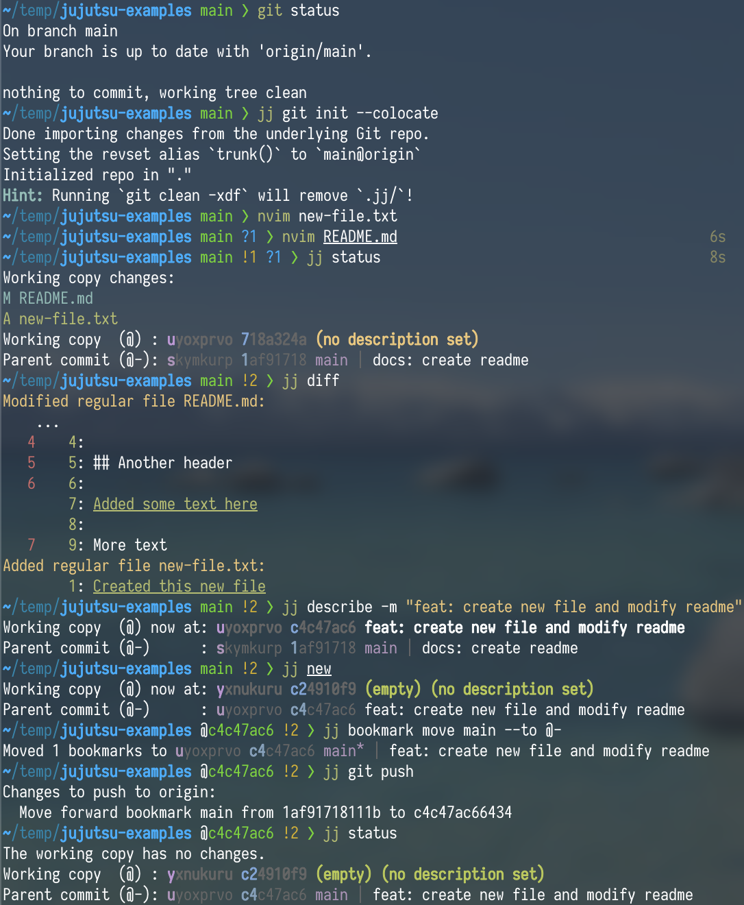
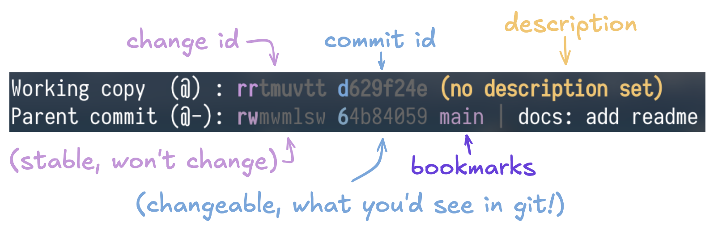
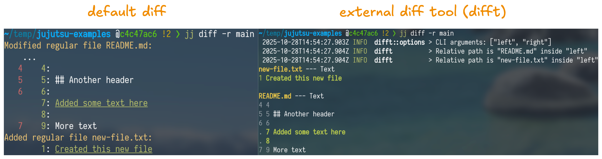
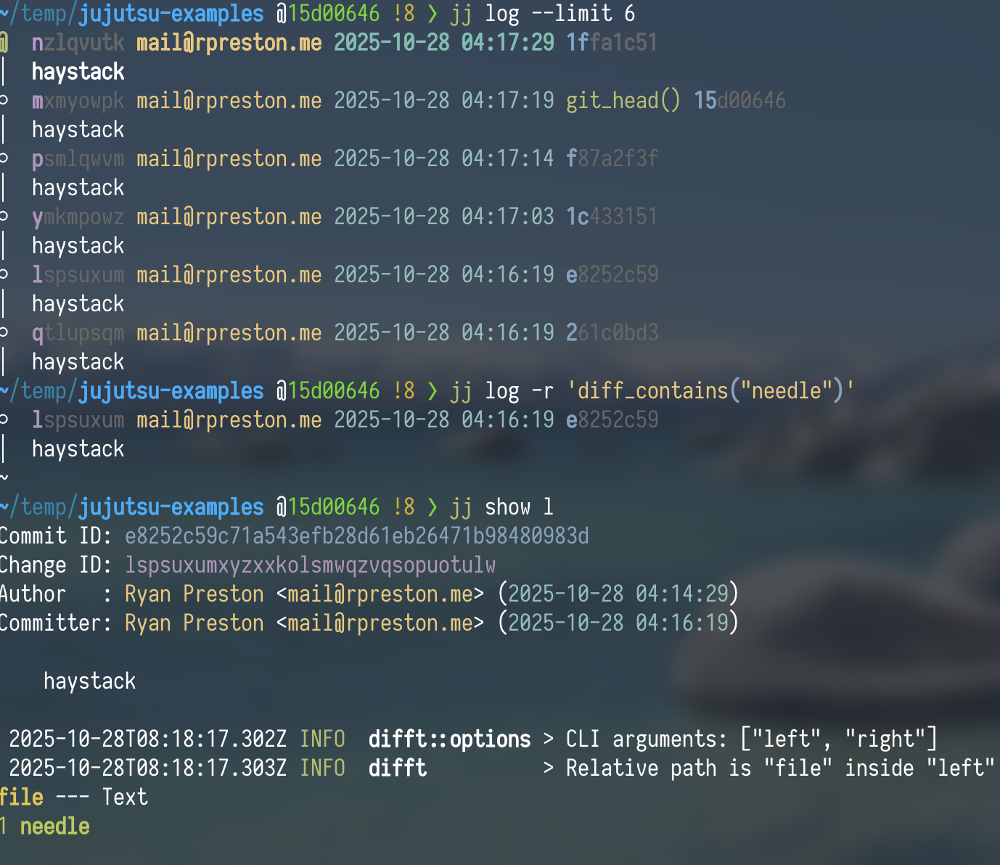
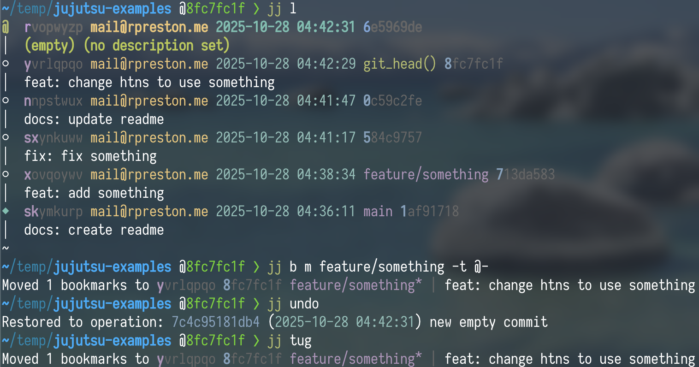

Intro to Jujutsu VCS
A better alternative to git, with features such as an operation log, automatic rebase and conflict resolution, and even an "undo"!
What is Jujutsu?
If you've ever programmed anything, then there's a good chance that you have used github to store your code. Github is based on the git VCS (version control system), so it's what most people are familiar with — but there are other options out there! Mercurial, Darcs, and the list goes on... but the newest arrival to the scene is Jujutsu!
Jujutsu stands out with really nice features of its own, while also building upon the design choices of those previously listed version control systems (speed from Git, revsets from Mercurial, and conflicts as first-class objects from Darcs).
Why use it?
If I had to pick my top reasons to give jj (jujutsu) a try, it would be
- It's compatible* with Git, so the barrier to entry is extremely low. You can even use it alongside git at the same time! Every time you have a simple change, just try doing it with jj first - whenever you find something you don't know how to do, just switch back to git and try again later after reading the docs.
- You can undo! To me, this is THE single best thing about jj because it gives you the confidence to really experiment with the tool. Whether it's your first rebase or you just had a typo and targeted the wrong revision, you can just "jj undo" and try again. If want to undo several changes, then you can either "jj undo" multiple times or simply use "jj op restore" to restore the repo to how it looked at a specific point.
*mostly compatible. You can't create new tags or use git hooks (among other things), but it's easy enough to run a one-off git command every now and then when you need to.
Getting started
Example
I learn best by example, so lets showcase a simple usage example before diving into explaining everything; I'll take a git repo and use jj (Jujutsu's CLI) to create and push a new change. Jujutsu's docs have a similar example on their tutorial page.

Initializing jj
To get started using jj with my git repo, I ran "jj git init --colocate". This configures Jujutsu to import and export from and to the Git repo on every jj command automatically.
jj status
I then made some changes before running "jj status" (alias 'st'). This is similar to "git status" — it shows me my modified/added files — but it also shows me something new: my "working copy" and my "parent commit".
This is the first big divergence from most version control systems that you have to wrap your head around: your working copy is automatically committed
This means that git status is showing us two revisions: our current working copy commit and our parent commit. We can also see their respective identifiers (change id and commit id), associated bookmarks (git branches), and descriptions.

Jujutsu uses change ids to distinguish their revisions, which don't change (even if the commits do). This allows you to have a consistent target, such as when you want to squash some changes into a revision then modify its description. You may have noticed that in those aforementioned identifiers, some of the letters are highlighted — this is its shortest unique substring, which you can use to refer to it.
- Another method of referencing revisions is via the "@" symbol. This always points to your current working copy, and you can refer to that revision's parent or child changes with "-" and "+" signs, respectively (@-, @+, @---, etc.).
jj diff
I like viewing a diff of my changes before 'finalizing them' (creating a new revision so I don't accidentally amend unrelated changes), which you can do with the jj diff command.
Below, I've put the default and difft diffs beside each other for the change from before (using the bookmark name instead of the change id):

jj describe
"jj describe" is how you add descriptions to your revisions. Some items of note are below:
- Many commands have shorthands in jj — "jj describe" --> "jj desc"
- Most commands will take a "-r" revision argument — if you don't provide one to "jj describe", it'll use "@" by default (the current working copy)
- You can inline a description by using the "-m" flag — if omitted, it'll open up in your default editor.
Finalizing your changes
You should always run "jj new" every time you finish a change — this prevents you from accidentally including unrelated changes, as any changes are always automatically amended into your working copy.
Once I've done that, I want to get my local changes into the "main" branch on my remote.
This branch already exists, so I want to:
- Move my local bookmark (branch) for "main" to the appropriate revision
- Push my changes so that the remote bookmark updates to reflect my local one.
I do this with "jj bookmark move"; specifically, I'm moving the "main" bookmark to my parent change ("@-").
jj b m main -t @-Note: your local bookmark will show an asterisk ("*") once you do this. It's just to signify that it's out of sync with the remote bookmark, to remind you of unpushed changes.
To then push your local bookmark to the remote, you can just run "jj git push".
There are multiple options this command can take, but some useful ones are:
- "-N", "--allow-new" — Allow pushing new bookmarks
- "-b", "--bookmark" — Push only this bookmark, or bookmarks matching a pattern (can be repeated)
- Use "glob:" prefix to select bookmarks by wildcard pattern.
- "--deleted" — Push all deleted bookmarks
Git <--> Jujutsu Commands
If you're coming from git, then Jujutsu's git command table can be really helpful to look through.
My Configuration
Jujutsu's configuration file can be edited with "jj config edit --user", and can find its path with "jj config path --user".
There are a lot of different options you can tweak, but here's what I personally use:
[ui]
# Disable all pagination, equivalent to using --no-pager
paginate = "never"
# Use Difftastic by default
diff-formatter = ["difft", "--color=always", "$left", "$right"]
[revset-aliases]
# Used for jj tug
"closest_bookmark(to)" = "heads(::to & bookmarks())"
[aliases]
tug = ["bookmark", "move", "--from", "closest_bookmark(@-)", "--to", "@-"]
l = ["log", "-r", "@ | ancestors(trunk()..(visible_heads() & mine()), 2) | trunk()", "--limit", "10"]
n = ["new"]
e = ["edit"]
a = ["abandon"]
gi = ["git", "init", "--colocate"]
[git]
colocate = true
auto-local-bookmark = true
private-commits = '''description(glob:'private:*')'''
[signing]
behavior = "own"
backend = "gpg"[ui]
The ui changes I made are disabling the pager, and using difft for my diffs. More information on using external diff tools can be found here.
[revset-aliases]
Revsets are an idea that Jujutsu took from Mercurial, and is just an expression that represents a set of revisions.This could be anything from every revision that you authored, to commits that are on a certain bookmark, to finding which commit has a specific change!

Jujutsu lets you define aliases to more complex revsets, of which I only have one in my config:
"closest_bookmark(to)" = "heads(::to & bookmarks())"[aliases]
jj tug
First up is the "tug" alias.
tug = ["bookmark", "move", "--from", "closest_bookmark(@-)", "--to", "@-"]Since Jujutsu doesn't automatically keep your branch up-to-date with your latest commits like Git does, you'll need to manually move your bookmarks if you append new changes to them. Rather than constantly typing "jj branch move <branch> --to @-", this alias lets you just type "jj tug". No need to type the branch name at all!

Custom log revset
"jj log" is a command you'll find yourself running quite a lot , so it makes sense to fine-tune this so that you only see what you care about. I personally took mine from Will Richardson's excellent post here on jj log revsets.
l = ["log", "-r", "@ | ancestors(trunk()..(visible_heads() & mine()), 2) | trunk()", "--limit", "10"]Shorthands
Below are some more "jj" commands that I frequently find myself using, so I've shortened them for convenience.
n = ["new"]
e = ["edit"]
a = ["abandon"]
gi = ["git", "init", "--colocate"][git]
colocate = true
auto-local-bookmark = true
private-commits = '''description(glob:'private:*')'''"auto-local-bookmark" lets you specify "jj new <bookmark>" instead of "jj new <bookmark>@<remote>" when you're checking out a remote bookmark.
The private-commits setting is the really interesting tidbit here though — it lets you provide a revset that Jujutsu will refuse to push. This is useful for if you're testing something locally and have temporarily hardcoded a token somewhere — just give it a description in line with this revset, then abandon that change once you're ready to push!
[signing]
Jujutsu supports commit signing with either GPG or SSH signing keys — below is the setup for GPG signing:
behavior = "own"
backend = "gpg"Other useful commands
jj absorb
jj absorb is essentially an 'auto-squash'; if you've made multiple unrelated changes in the same revision, then you can just run "jj absorb" rather than splitting them up and individually running "jj squash -u -t <destination>". It'll automatically try to squash them into mutable ancestors of the source revision ("@" by default) based on which lines were modified.
jj duplicate
Use jj duplicate if you want to cherry-pick some changes. If you have several changes you'd like to cherry-pick, such as an entire branch, then you can use some revset operators. I commonly find myself using one of the below:
jj duplicate -r <parent_branch>..<branch_to_cp> -d <target_branch>
jj duplicate -r <first_commit>::<last_commit> -d <target_branch>Rebasing and Merge Conflicts
I won't touch too much on rebasing and merge conflicts since this post is long enough as-is, but just know that Jujutsu will automatically propagate your changes to descendant revisions for you — and that it's as nice as it sounds. Try it out!